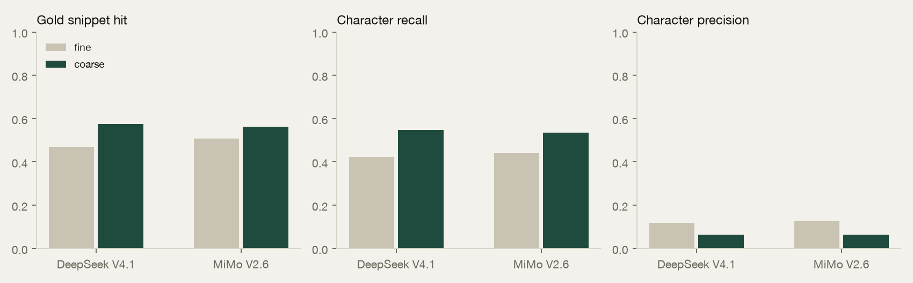
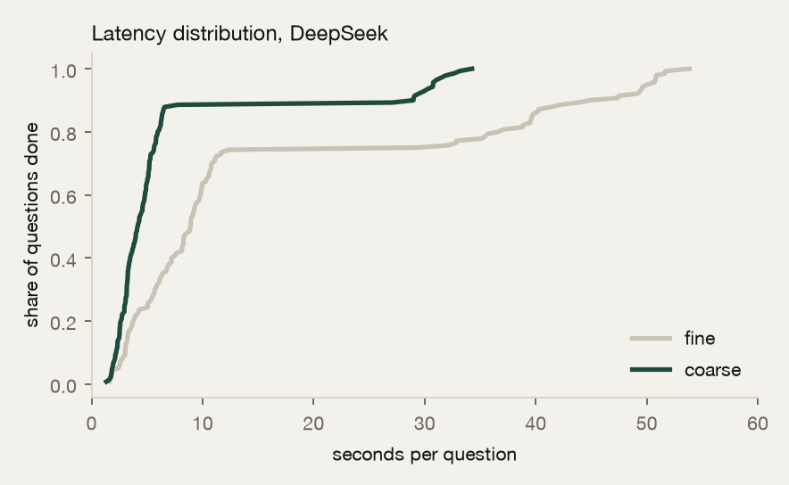
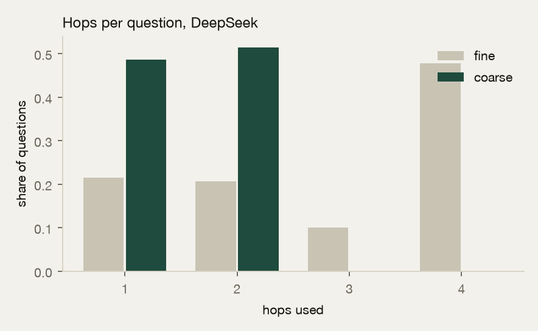
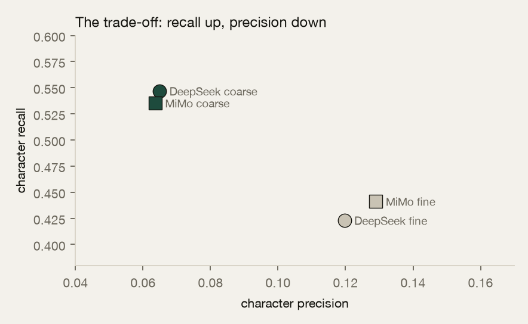
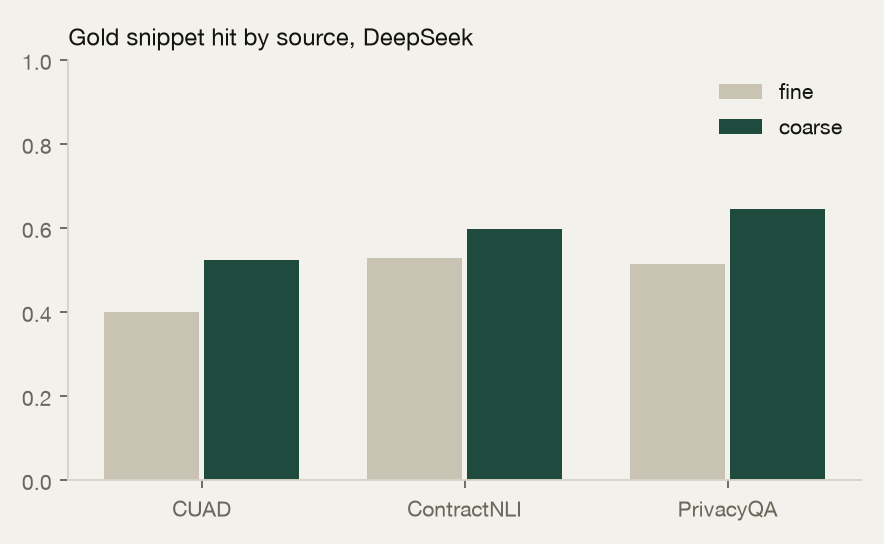

HBC-RAG · retrieval granularity study · legal contracts · November 2026
Hop-Bounded Agentic RAG for Legal Contract Question Answering
How many passages should an agentic RAG system retrieve per step when the answer is a clause buried in a contract? Measured on 140 questions from LegalBench-RAG over 468 contracts and policies, scored by character span against human-labelled evidence.
What improved
Four passages per step instead of one, DeepSeek V4.1 Flash, 140 questions. Intervals are paired bootstrap, 95%.
What got worse: character precision, 0.120 to 0.065. Coarse retrieval pulls in more text that is not gold, so it suits a pipeline where a reader or reranker trims context.
Method
- Data: LegalBench-RAG (CUAD contracts, ContractNLI NDAs, PrivacyQA policies). 468 documents split into 13,962 passages of about 1,000 characters; MAUD merger agreements left out to fit the free database tier. Each question carries human-labelled gold character spans.
- Retrieval: local bge-small embeddings, pgvector HNSW and Postgres full-text search fused with reciprocal rank fusion, on Neon Postgres.
- Agent: LLM planner that retrieves, reads and quotes the clause or issues a more specific query, with a hop cap.
fineretrieves one passage per hop (up to four hops);coarseretrieves four per hop (up to two). Same prompt, model and temperature 0. - Scoring: gold snippet hit, character recall and character precision from the benchmark's own definitions, plus hops, latency and billed cost. Paired bootstrap, 10,000 resamples. No LLM judge.
Results

DeepSeek V4.1 Flash, 140 questions
| policy | snippet hit | char recall | char precision | hops | p50 | p95 | cost |
|---|---|---|---|---|---|---|---|
| fine, 1 passage per hop | 0.469 | 0.423 | 0.120 | 2.84 | 8.93s | 50.1s | $0.0630 |
| coarse, 4 passages per hop | 0.575 | 0.547 | 0.065 | 1.51 | 4.17s | 30.8s | $0.0467 |
Coarse minus fine: snippet hit +0.106 (95% CI +0.046 to +0.166); character recall +0.124 (95% CI +0.060 to +0.186); character precision -0.055 (95% CI -0.082 to -0.031).
MiMo V2.6 Flash, 100 questions
| policy | snippet hit | char recall | char precision | hops | p50 | p95 | cost |
|---|---|---|---|---|---|---|---|
| fine, 1 passage per hop | 0.509 | 0.441 | 0.129 | 2.90 | 15.72s | 34.2s | $0.0608 |
| coarse, 4 passages per hop | 0.562 | 0.535 | 0.064 | 1.59 | 8.58s | 16.6s | $0.0501 |
Coarse minus fine: snippet hit +0.053 (95% CI -0.015 to +0.123); character recall +0.094 (95% CI +0.023 to +0.166); character precision -0.065 (95% CI -0.100 to -0.034).
Why it works, and what it costs




By source (DeepSeek)
| source | questions | hit, fine | hit, coarse | precision, fine | precision, coarse |
|---|---|---|---|---|---|
| CUAD contracts | 60 | 0.399 | 0.523 | 0.087 | 0.048 |
| ContractNLI NDAs | 50 | 0.527 | 0.597 | 0.124 | 0.058 |
| PrivacyQA policies | 30 | 0.514 | 0.645 | 0.177 | 0.111 |
Where coarse wins on one question
Consider the Non-Disclosure Agreement between Stony Hill and Buyer; Does the document specify whether the Receiving Party is required to destroy or return Confidential Information upon the termination of the Agreement?
fine hit 0.00 in 1 hops, coarse hit 1.00 in 2 hop(s)
Consider Seeed's Non-Disclosure Agreement; Does the document state that Confidential Information shall only include technical information?
fine hit 0.00 in 1 hops, coarse hit 0.50 in 1 hop(s)
Consider Kenway's Non-Disclosure Agreement; Does the document indicate that the Agreement does not grant the Receiving Party any rights to the Confidential Information?
fine hit 0.00 in 4 hops, coarse hit 1.00 in 1 hop(s)
What this does and does not show
- Evidence in LegalBench-RAG sits inside one document, so this is retrieval granularity inside a contract, not multi-document multi-hop reasoning.
- The benchmark has no gold answers, only gold evidence, so the study scores retrieval and does not claim answer accuracy.
- Recall is bought with precision. Coarse retrieval returns more text that is not gold, so character precision roughly halves on both models. It suits a pipeline where a reader or reranker trims context, not one that returns passages straight to a user.
- The two models agree on direction, not on size. On MiMo the gain in gold snippet hit is not statistically distinguishable from zero; the gain in character recall is. One MiMo coarse request failed and counts as a miss.
- One seed, 140 questions on DeepSeek and 100 on MiMo, a subset of the corpus, and MAUD excluded. Differences inside the intervals are noise.
Related: the same system on HotpotQA and MuSiQue, with the cache study, is in the benchmark report.